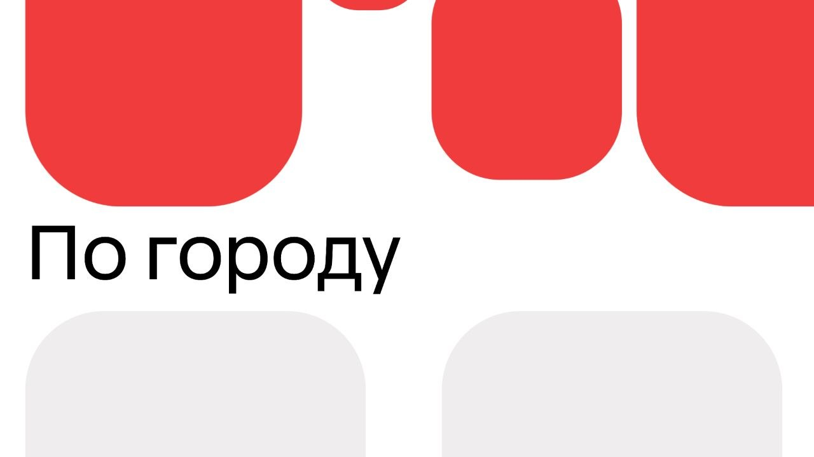

Projects
web experiments, interfaces, and small living things.

Russia Today Experimental media interface with bold sections, live weather, city transport, and editorial cards. open live site ->web experiments, interfaces, and small living things.

Russia Today Experimental media interface with bold sections, live weather, city transport, and editorial cards. open live site ->